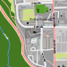

Berufliches Zentrum (BZ)
Öffnungszeiten
Mo - Do:
08.00 - 16.00
Fr:
08.00 - 12.00
Bereiche
Holzwerkstatt
Metallwerkstatt
Hauswirtschaft
Büro
Position auf der Karte

Das könnte dich auch interessieren
Berufsbildende Maßnahme (BBM)
Mehr interessante Orte entdecken
← Startseite
← Karte